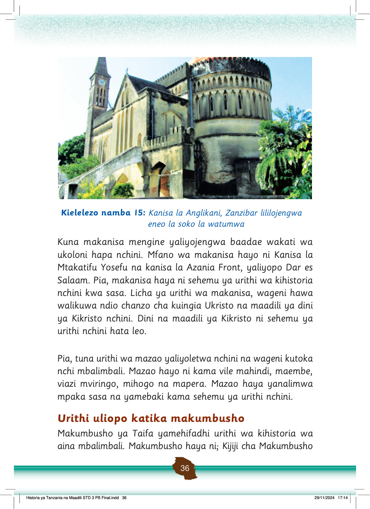

Kanisa la Anglikani la Zanzibar. Ni jengo la kihistoria lililojengwa eneo la soko la watumwa.
Kielelezo namba 15: Kanisa la Anglikani, Zanzibar lililojengwa eneo la soko la watumwa
Kuna makanisa mengine yaliyojengwa baadaye wakati wa ukoloni hapa nchini.
Mfano wa makanisa hayo ni Kanisa la Mtakatifu Yosefu na kanisa la Azania Front, yaliyopo Dar es Salaam.
Pia, makanisa haya ni sehemu ya urithi wa kihistoria nchini kwa sasa.
Licha ya urithi wa makanisa, wageni hawa walikuwa ndio chanzo cha kuingia Ukristo na maadili ya dini ya Kikristo nchini.
Dini na maadili ya Kikristo ni sehemu ya urithi nchini hata leo.
Pia, tuna urithi wa mazao yaliyoletwa nchini na wageni kutoka nchi mbalimbali.
Mazao hayo ni kama vile mahindi, maembe, viazi mviringo, mihogo na mapera.
Mazao haya yanalimwa mpaka sasa na yamebaki kama sehemu ya urithi nchini.
Urithi uliopo katika makumbusho
Makumbusho ya Taifa yamehifadhi urithi wa kihistoria wa aina mbalimbali.
Makumbusho haya ni; Kijiji cha Makumbusho
Historia ya Tanzania na Maadili STD 3 PB Final.indd 36
29/11/2024 17:14